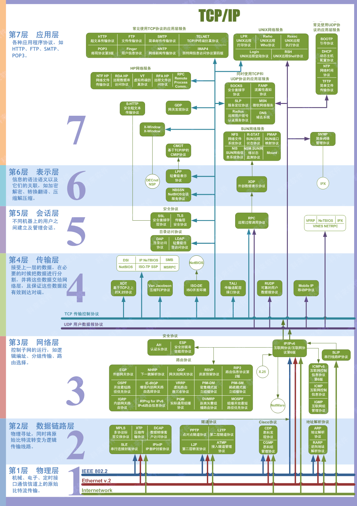
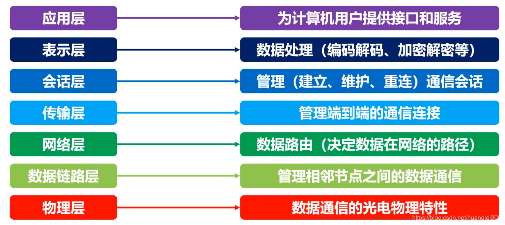
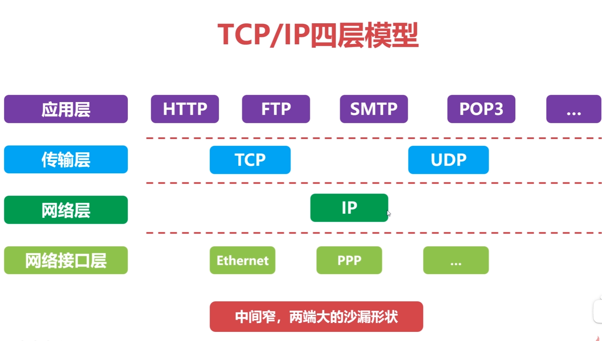
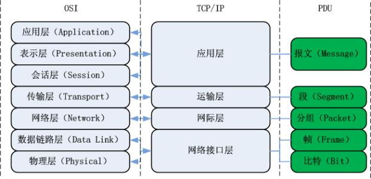

计算机网络
1 计算机网络概述¶

1.1 分类¶
按照网络作用的范围：
- 广域网 WAN
- 城域网 MAN
- 局域网 LAN
按照网络的使用者：
- 公用网络
- 专用网络
1.2 计算机网络的层次结构¶
1.2.1 层次结构设计的基本原则¶
- 各层之间是相互独立的；
- 每一层需要有足够的灵活性；
- 各层之间完全解耦。
1.2.2 OSI 体系结构¶

1.2.3 TCP/IP 四层模型¶

1.2.4 TCP/IP 四层模型与 OSI 体系结构对比¶

1.4 计算机网络的性能指标¶
速率：bps\=bit/s
时延：发送时延、传播时延、排队时延、处理时延
往返时间RTT：数据报文在端到端通信中的来回一次的时间。
物理层¶
物理层的作用：连接不同的物理设备，传输比特流。该层为上层协议提供了一个传输数据的可靠的物理媒体。简单的说，物理层确保原始的数据可在各种物理媒体上传输。
物理层设备：
- 中继器【Repeater，也叫放大器】 ：同一局域网的再生信号；两端口的网段必须同一协议；5-4-3规程： 10BASE-5以太网中，最多串联4个中继器，5段中只能有3个连接主机；
- 集线器：同一局域网的再生、放大信号（多端口的中继器）；半双工，不能隔离冲突域也不能隔离广播域。
信道的基本概念：信道是往一个方向传输信息的媒体，一条通信电路包含一个发送信道和一个接受信道。
- 单工通信信道：只能一个方向通信，没有反方向反馈的信道；
- 半双工通信信道：双方都可以发送和接受信息，但不能同时发送也不能同时接收；
- 全双工通信信道：双方都可以同时发送和接收。